IMAGE |
ID |
ITEM |
DESCRIPTION |
|---|---|---|---|

|
2 |
Stone Pedra |
A common material with many uses in crafting and building. |
 |
176 50g |
Egg Ovo |
A regular white chicken egg. |
| 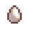 |
174 95g |
Large Egg Ovo Grande |
It's an uncommonly large white egg |
|
180 50g |
Brown Egg Ovo Marrom |
A regular brown chicken egg. |
|
 |
182 95g |
Large Brown Egg Ovo Grande Marrom |
It's an uncommonly large brown egg! |
 |
184 125g |
Milk Leite |
A jug of cow's milk. |
| 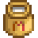 |
184 190g |
Large Milk Leite Grande |
A large jug of cow's milk. |
 |
9 |
Lightning Rod Pára-Raios |
Collects energy from lightning storms and turns it into battery packs. |
 |
11 |
Steel Smallsword Espada de Aço |
A standard metal blade.
4-8+2
|
| 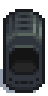 | 13 |
Furnace Fornalha |
Turns ore and coal into metal bars. |
 |
15 |
Preserves Jar Jarra de Conserva |
Turns vegetables into pickles and fruit into jam. |
 |
16 50g |
Wild Horseradish Raíz Forte |
A spicy root found in the spring. |
17 |
Loom Tear |
Turns raw wool into fine cloth. |
|
 |
18 30g |
Daffodil Narciso |
A traditional spring flower that makes a nice gift. |
 |
19 |
Oil Maker Gerador de Óleo |
Makes gourmet truffle oil. |
 |
20 60g |
Leek Alho-Poró |
A tasty relative of the onion. |
21 |
Crystalarium Cristalário |
Insert a gem of your choice and it will grow copies. |
|
 |
22 40g |
Dandelion Dente-de-Leão |
Not the prettiest flower, but the leaves make a good salad. |
 |
24 35g |
Parsnip Chirívia |
A spring tuber closely related to the carrot. It has an earthy taste and is full of nutrients. |
 |
33 |
Suit of Armor Armadura |
A decorative piece for your farm. |
35 |
Basic Log |
A decorative piece for your farm. |
|
 |
37 |
Wood Sign Placa de Madeira |
Use an item on this to change what's displayed. The item won't be consumed. |
 |
39 |
Dark Sign Placa das Trevas |
Use an item on this to change what's displayed. The item won't be consumed. |
 |
45 |
Ornamental Hay Bale Fardo de Feno Ornamental |
A decorative piece for your farm. |
 |
47 |
Grave Stone Lápide |
A decorative piece for your farm. |
 |
49 200g |
Rapier Florete |
An elegant blade.
15-25+2
|
 |
51 250g |
Broken Trident Tridente Quebrado |
It came from the sea, but it's still sharp.
15-26
|
 |
53 |
Stone Parrot Papagaio de Pedra |
Garden art for your farm. |
55 |
Stone Junimo Junimo de Pedra |
Garden art for your farm. |
|
 |
57 650 |
Dragontooth Cutlass Espada de Dente de Dragão |
The blade was forged from a magical tooth.
75-90+50
|
 |
59 600 |
Dragontooth Shiv Adaga de Dente de Dragão |
The blade was forged from a magical tooth.
40-50+3+100
|
 |
60 250g |
Emerald Esmeralda |
A precious stone with a brilliant green color. |
 |
61 600 |
Iridium Needle Agulha de Irídio |
The point is unbelievably sharp, even down to the atomic level.
20-35+6+200
|
 |
62 180g |
Aquamarine Água-Marinha |
A shimmery blue-green gem. |
 |
63 850 |
Infinity Gavel Martelo do Infinito |
The true form of the Galaxy Hammer.
100-120+1+2
|
 |
64 250g |
Ruby Rubi |
A precious stone that is sought after for its rich color and beautiful luster. |
 |
66 100g |
Amethyst Ametista |
A purple variant of quartz. |
|
68 80g |
Topaz Topázio |
Fairly common but still prized for its beauty. |
|
 |
69 850g |
Banana Sapling Muda de Bananeira |
Takes 28 days to produce a mature Banana tree. Bears fruit in the summer, or all year round when planted on Ginger Island. |
| 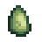 |
70 200g |
Jade Jade |
A pale green ornamental stone. |
 |
72 750g |
Diamond Diamante |
A rare and valuable gem. |
 |
74 2000g |
Prismatic Shard Fragmento Prismático |
A very rare and powerful substance with unknown origins. |
 |
78 25g |
Cave Carrot Cenoura Subterrânea |
A starchy snack found in caves. It helps miners work longer. |
 |
80 25g |
Quartz Quartzo |
A clear crystal commonly found in caves and mines. |
 |
82 100g |
Fire Quartz Quartzo de Fogo |
A glowing red crystal commonly found near hot lava. |
 |
83 |
Wicked Statue Estátua Maligna |
There's something unsettling about the looks of this statue. |
 |
84 75g |
Frozen Tear Lágrima Congelada |
A crystal fabled to be the frozen tears of a yeti. |
|
86 50g |
Earth Crystal Cristal de Terra |
A resinous substance found near the surface. |
|
 |
88 100g |
Coconut Coco |
A seed of the coconut palm. It has many culinary uses. |
89 |
Obsidian Vase Vaso de Obsidiana |
Can be placed inside your house. |
|
 |
90 75g |
Cactus Fruit Fruta do Cacto |
The sweet fruit of the prickly pear cactus. |
 |
91 150g |
Banana Banana |
A sweet, starchy tropical fruit. |
 |
92 |
Sap Seiva |
A fluid obtained from trees. |
93 |
Torch Tocha |
Provides a modest amount of light. |
|
 |
96 |
Dwarf Scroll I Pergaminho dos Anões |
A yellowed scroll of parchment filled with dwarven script. This one's tied with a red bow. |
| 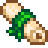 | 97 |
Dwarf Scroll II Pergaminho dos Anões II |
A yellowed scroll of parchment filled with dwarven script. This one's tied with a green ribbon. |
 |
98 |
Dwarf Scroll III Pergaminho dos Anões III |
A yellowed scroll of parchment filled with dwarven script. This one's tied with a blue rope. |
 |
99 |
Dwarf Scroll IV Pergaminho dos Anões VI |
A yellowed scroll of parchment filled with dwarven script. This one's tied with a golden chain. |
 |
100 40g |
Chipped Amphora Ânfora Quebrada |
An ancient vessel made of ceramic material. Used to transport both dry and wet goods. |
 |
101 40g |
Arrowhead Ponta de Flecha |
A crudely fashioned point used for hunting. |
 |
102 |
Lost Book Livro Perdido |
- |
 |
103 60g |
Ancient Doll Boneco Antigo |
An ancient doll covered in grime. This doll may have been used as a toy, a decoration, or a prop in some kind of ritual. |
 |
104 200g |
Elvish Jewelry Joias Élficas |
Dirty but still beautiful. On the side is a flowing script thought by some to be the ancient language of the elves. No Elvish bones have ever been found. |
 |
105 50g |
Chewing Stick Palha para Mastigar |
Ancient people chewed on these to keep their teeth clean. |
 |
106 300g |
Ornamental Fan Leque ornamental |
This exquisite fan most likely belonged to a noblewoman. Historians believe that the valley was a popular sixth-era vacation spot for the wealthy. |
 |
107 350g |
Dinosaur Egg Ovo de Dinossauro |
A giant dino egg... The entire shell is still intact! |
 |
108 300g |
Rare Disc Disco Raro |
A heavy black disc studded with peculiar red stones. When you hold it, you're overwhelmed with a feeling of dread. |
| 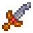 |
109 100g |
Ancient Sword Espada Antiga |
It's the remains of an ancient sword. Most of the blade has turned to rust, but the hilt is very finely crafted. |
| 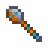 |
110 25g |
Rusty Spoon Colher Enferrujada |
A plain old spoon, probably ten years old. Not very interesting. |
 |
111 25g |
Rusty Spur Esporão Enferrujado |
An old spur that was once attached to a cowboy's boot. People must have been raising animals in this area for many generations. |
 |
112 25g |
Ancient Sword Engrenagem Velha |
A well preserved cog that must have been part of some ancient machine. This could be dwarven technology. |
 |
113 50g |
Chicken Statue Estátua de Galinha |
It's a statue of a chicken on a bronze base. The ancient people of this area must have been very fond of chickens. |
 |
114 |
Ancient Seed Semente Antiga |
It's a dry old seed from some ancient plant. By all appearances it's long since dead... |
 |
115 50g |
Prehistoric Tool Ferramenta Pré-Histórica |
Some kind of gnarly old digging tool. |
 |
116 40g |
Dried Starfish Estrela-do-Mar Ressecada |
A starfish from the primordial ocean. It's an unusually pristine specimen! |
 |
117 100g |
Anchor Âncora |
It may have belonged to ancient pirates. |
|
118 20g |
Glass Shards Cacos de Vidro |
A mixture of glass shards smoothed by centuries of ocean surf. These could have belonged to an ancient mosaic or necklace. |
|
 |
119 100g |
Bone Flute Flauta de Ossos |
It's a prehistoric wind instrument carved from an animal's bone. It produces an eerie tone. |
 |
120 50g |
Prehistoric Handaxe Biface Pré-Histórico |
One of the earliest tools employed by humans. This "crude" tool was created by striking one rock with another to form a sharp edge. |
 |
121 100g |
Dwarvish Helm Elmo Anão |
It's one of the helmets commonly worn by dwarves. The thick metal plating protects them from falling debris and stalactites. |
 |
122 200g |
Dwarf Gadget Dispositivo de Anão |
It's a piece of the advanced technology once known to the dwarves. It's still glowing and humming, but you're unable to understand how it works. |
 |
123 100g |
Ancient Drum Tambor Antigo |
It's a drum made from wood and animal skin. It has a low, reverberating tone. |
 |
124 500g |
Golden Mask Máscara Dourada |
A creepy golden mask probably used in an ancient magic ritual. A socket in the forehead contains a large purple gemstone. |
 |
125 250g |
Golden Relic Relíquia Dourada |
It's a golden slab with hieroglyphs and pictures emblazoned onto the front. |
 |
126 1,000g |
Strange Doll (Green) Boneco Estranho (Verde) |
??? |
|
127 1,000g |
Strange Doll (Yellow) Boneco Estranho (Amarelo) |
??? |
|
 |
129 30g |
Anchovy Anchova |
A small silver fish found in the ocean. |
 |
130 100g |
Tuna Atum |
A large fish that lives in the ocean. |
 |
131 40g |
Sardine Sardinha |
A common ocean fish. |
 |
132 45g |
Bream Brema |
A fairly common river fish that becomes active at night. |
 |
136 100g |
Largemouth Bass Achigã |
A popular fish that lives in lakes. |
 |
137 50g |
Smallmouth Bass Achigã Pequeno |
A freshwater fish that is very sensitive to pollution. |
| 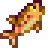 |
138 65g |
Rainbow Trout Truta Arco-Íris |
A freshwater trout with colorful markings. |
 |
139 75g |
Salmon Salmão |
Swims upstream to lay its eggs. |
|
140 105g |
Walleye Picão-Verde |
A freshwater fish caught at night. |
|
| 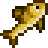 |
141 55g |
Perch Perca |
A freshwater fish of the winter. |
 |
142 30g |
Carp Carpa |
A common pond fish. |
 |
143 200g |
Catfish Bagre |
An uncommon fish found in streams. |
 |
144 100g |
Pike Lúcio |
A freshwater fish that's difficult to catch. |
 |
145 30g |
Sunfish Sunfish |
A common river fish. |
 |
150 50g |
Red Snapper Cioba |
A popular fish with a nice red color. |
 |
146 75g |
Red Mullet Salmonete |
Long ago these were kept as pets. |
 |
147 30g |
Herring Arenque |
A common ocean fish. |
|
161 500g |
Ice Pip Chione |
A rare fish that thrives in extremely cold conditions. |
|
 |
128 200g |
Pufferfish Baiacu |
Inflates when threatened. |
 |
165 150g |
Scorpion Carp Carpa Escorpiônica |
It's like a regular carp but with a sharp stinger. |
 |
156 45g |
Ghostfish Peixe Fantasma |
A pale, blind fish found in underground lakes. |
 |
164 75g |
Sandfish Areinha |
It tries to hide using camouflage. |
 |
158 300g |
Stonefish Peixe Pedra |
A bizarre fish that's shaped like a brick. |
 |
148 85g |
Eel Enguia |
A long, slippery little fish. |
|
162 700g |
Lava Eel Enguia de Lava |
It can somehow survive in pools of red-hot lava. |
|
 |
154 75g |
Sea Cucumber Pepino-do-Mar |
A slippery, slimy creature found on the ocean floor. |
| 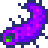 |
155 250g |
Super Cucumber Super-Pepino |
A rare, purple variety of sea cucumber. |
|
149 150g |
Octopus Polvo |
A mysterious and intelligent creature. |
|
 |
151 80g |
Squid Lula |
A deep sea creature that can grow to enormous size. |
| 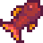 |
159 1500g |
Crimsonfish Peixe-Carmim |
Lives deep in the ocean but likes to lay its eggs in the warm summer water. |
 |
160 900g |
Angler Tamboril |
Uses a bioluminescent dangler to attract prey. |
| 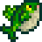 |
163 5000g |
Legend Lenda |
The king of all fish! They said he'd never be caught. |
 |
152 20g |
Seaweed Algas Marinhas |
It can be used in cooking. |
| 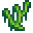 |
153 20g |
Green Algae Algas Verdes |
It's really slimy. |
 |
157 25g |
White Algae Algas Brancas |
It's super slimy. |
|
166 5000g |
Treasure Chest Baú do Tesouro |
Wow, it's loaded with treasure! This is sure to fetch a good price. |
|
 |
279 5000g |
Magic Rock Candy Doce-Pedra Mágico |
A rare and powerful candy infused with the essence of the prismatic shard.
+5+5+2+5+2
|
Id Items List Stardew Valley 1.5, 1.6
Id Items List and price Stardew Valley 1.5, 1.6.